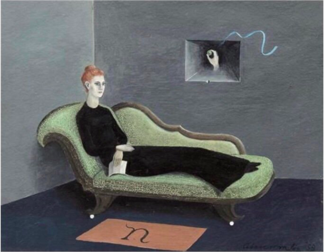

Things are happening here, well it's the nonlinear front of conditions and feelings . Outside your glass, brick, gib, ply, various wood grains and arc's of covering a spring being as yourself. You may find yourself in rain fade. Rain fade is caused by absorption of a microwave radio frequency (RF) signal by atmospheric rain, snow, or ice, and losses which are especially prevalent at frequencies above 11 GHz. It also refers to the degradation of a signal caused by the electromagnetic interference of the leading edge of a storm front. Well, says Wiki. Or, Visually
{kind=link}
When I was younger I really enjoyed rain fade. I like the quiet eerie feeling. Silence with family from interrupting storms. I haven't experienced rain fade for a while. I don't watch TV. What I do is lounge at times and look out. I can see, hear and feel the rain. It comes in those waves. Like many other waves that may full you with some kind of energy. In these moments i find myself thinking in some or another way. Or I question. Where is this front of thinking coming from? How and then why do trail off... These days I wonder why I half heartedly know about certain things. Is there an Aura that I want things to always have, like thats there thing you have your thing I don't want to own your thing. You keep your thing you have. I don't want to dominantly know you. Keep growing i think, all the things I want to learn about will keep growing and showing. Spring rain stops.

Lounge
The letter
The ribbon
Traveling: hi So, I'm here on the bus right now, sleepily smoothing over smothered lands of a newborn heat delivered in the new month. I thought I should write to you and then I looked outside and saw a clock tower. It's 16.16 the clock in the bus is an hour behind. This reminds me of my youth. Long drives I would do with my mum in Aotearoa from the east to the west coast. The clock not bothered by daylight saving and my mother ambilivant with too many girls to look after to register any significant need to care. I didn't care either, all I did on those drives was thought gazing out the window, I always felt a little guilty about my hours spent just staring out, those hours could've been beneficial in any other way I thought then my eyes carelessly chutting over landscapes pondering now forgotton thoughts the everything sponging together in a my thought my eyes, my discarding thoughts. I was thinking about this thought gazing of my youth on a bus ride from Amsterdam to Paris. How many lost thoughts & so many hours of staring out those windows. This is white noise for my eyes, a blink every now and again. A thought trailing off. I read somewhere about a medidative state a person taps into in these moments. Staring out into the void, a blank mind. Theres always something going on surely. I don't remember the book.
hi, its late but i'm making a list.
- stretch
- start css'ing your bonjour
- I would like to translate a version to french, begin
- look at laurel class
- learn more css. lynda
- go for walk and recap
- free afternoon bub
20. 08. 2019 Charle De Gualle Paris
A few days ago I watched 5 films by Chris Marker at the Pompidue, after Jonas Mekas. Today I brough a Chantal Akerman book.
I'm leaving europe so its cinematic to recall some films.
While I'm here I want to sit and observe. Its the same light I remember the last time I left this Airport. I soft yellow haze. Grey Blue. The Horizon is my plane. I have purchased sparkling water, a green juice called innocent that i've been avoiding to buy all year, though now i believe this fake juice is my not so innocent self going home. I brought gum, for my ears.
I begin to watch a Couch in New York Chantal Akerman on youtube. English version. I brought the book in Paris. I have a Desktop background of a painting by Gertrude Abercombie. The void of staring into space on a couch while home listening to parents and family. Hours ago I looked at an online show of R's (roomate in amsterdam) and other artists names I know few some from online. I see M's, M's submission link was on a youtube tab. A boat going around in circles without a driver. This plays for an hour. The voice over of the lady overlaps with my movie. Abandoned boat in Seatle. I'm sleepless in Aotearoa. Jetlagged .I'm going around in circles as the boat. Rust on the rope as I reach for the anchor. Looking at Karioi, Whaingaroas own Sleeping lady. Resting my eyes along the comfort of distance. I am here and you are there. I see the trees are forming a shape of a whale. the tail the body the water pours, burst out. Later I'm sleeping listening to white noise I have a moment of confusion the sound transports me back to driving on the boat the sound is ocean white noise.
18th November, so I picked up a book yesterday evening. I picked up a book meaning I downloaded a PDF. This one was spurred by a conversation with a friend earlier. The book is called The Yellow Wall Paper . I was reading it and forgot how i enjoy to imagine words. Thats mostly it.